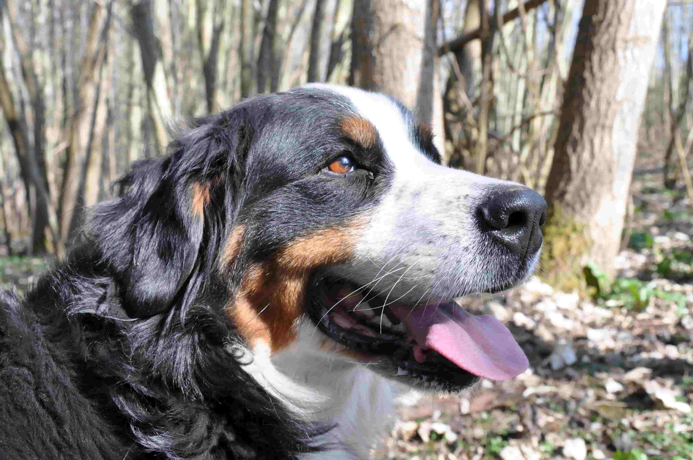
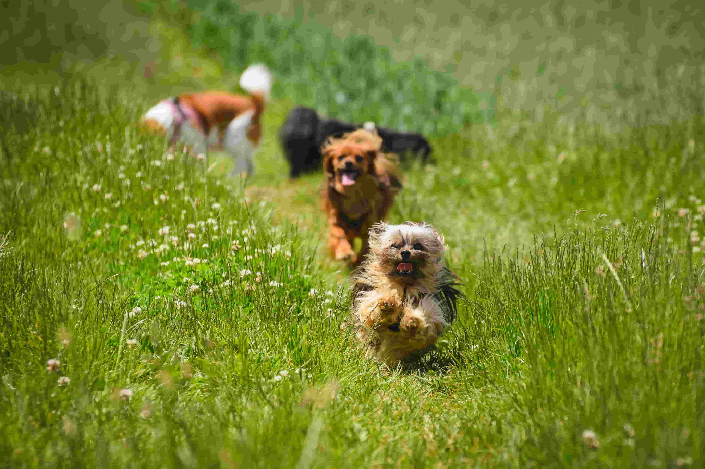
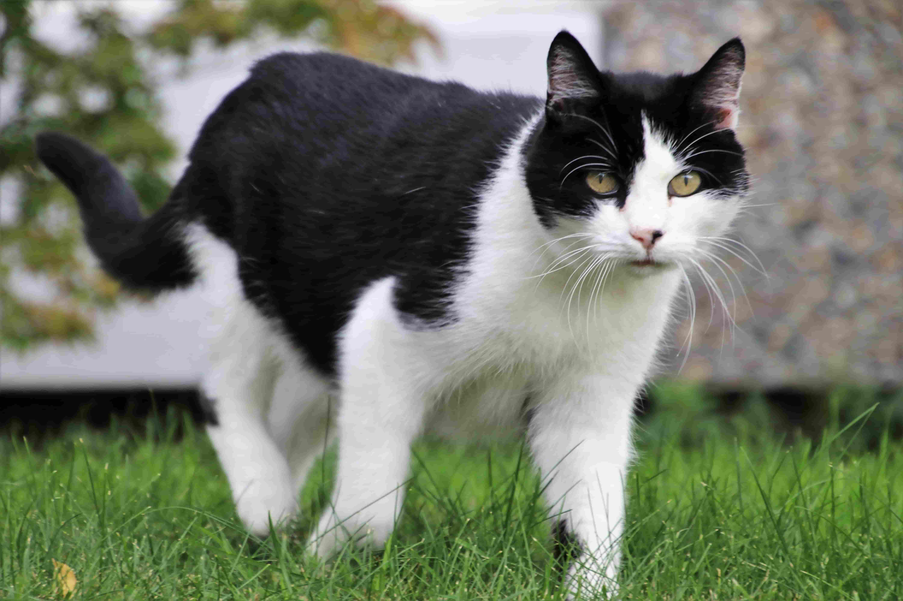
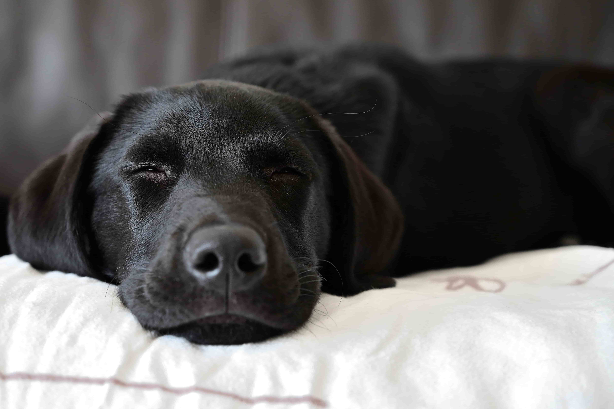

Welcome to Second Chance Shelter

Second Chance Shelter is a non-profit animal shelter runned by an elderly couple. We care for abandoned and homeless dogs and cats and help them find a new, loving home.
Our mission is to give every animal a second chance at a happy life. You can help us by adopting, becoming a volunteer or making a donation.
Found a Homeless Animal?
If you have found a lost or homeless cat or dog, please call us first.
Our Work in Numbers
320+
Animals have found a new home
45
Dedicated volunteer helpers
24/7
Care and attention for our animals
Looking for a Home Right Now

Luna
A calm and affectionate cat who loves staying indoors and spending time with people.
Ask about adoption
Rocky
A loving dog who likes to hangout around people and enjoys long walks outdoors.
Ask about adoptionCan't adopt right now? You can still help our animals by making a donation.
Take a Look Inside the Shelter
Get a glimpse of Rocky playing in our backyard.
Opening Hours
Monday - Friday
9:00 - 17:00
Saturday - Sunday
Visits by appointment
Our Partners
The fictional Second Chance Shelter works with the City of Helsinki, which is responsible for local stray animal services, Pawprint Veterinary Clinic, which provides veterinary care for the animals, and Friends of Furry Animals, an animal welfare association that helps the animals find new homes.
Give an Animal a Second Chance
Every animal deserves a safe and loving home. Explore our adoption process and discover how you can make a difference.